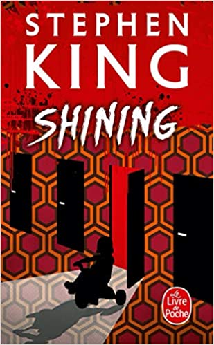

Blog de lecture
Lire c'est vivre dans un autre univers
"On cloue les cercueils comme si on avait peur que les morts s'envolent."
Georges Perros
-
L'échiquier du mal
Dan Simmons
Saul Laski est un Juif rescapé du camp d'extermination de Chełmno en 1942 pendant la Seconde Guerre mondiale. Pendant près de quarante ans, il traque sans relâche son tortionnaire nazi de l'époque, l'Oberst, disparu sans laisser de traces après la guerre. Puis, au mois de décembre 1980, une série de meurtres inexpliqués à Charleston en Caroline du Sud remet Saul sur la piste de son ancien bourreau.
-
A Ghost Story
Casey Affleck et Rooney Mara
Le fantôme d'un homme rend visite à sa femme en deuil dans la maison de banlieue qu'ils partageaient encore récemment, pour y découvrir que dans ce nouvel état spectral, le temps n'a plus d'emprise sur lui. Condamné à ne plus être que simple spectateur de la vie qui fut la sienne, avec la femme qu'il aime, le fantôme se laisse entraîner dans un voyage à travers le temps et la mémoire, en proie aux ineffables questionnements de l'existence et à son incommensurabilité.
-
La maison des damnés
Richard Matheson
Passer une semaine dans une maison réputée hantée depuis trente ans : telle est la mission confiée au Dr Barrett et à une équipe de spirites par un milliardaire mourant, qui veut savoir si son âme lui survivra. Mission que le parapsychologue s'empresse d'accepter, espérant bien ainsi triompher des "maléfices" et vérifier ses théories scientifiques sur l'existence d'une vie après la mort. Arrivés sur place, les investigateurs se rendent vite compte que le lieu est à la hauteur de sa réputation : résonnant des crimes et des orgies qu'elle a accueillis par le passé, la maison Belasco semble les attendre.
-

Shinning : L'enfant lumière
Stephen King
Quand on propose à Jack Torrance, ancien professeur et ancien alcoolique, un poste de gardien pour l'hiver à l'hôtel Overlook dans les montagnes du Colorado, il croit tenir là une chance de se racheter aux yeux de sa famille. Il s'y installe avec Wendy, sa femme, et leur fils Danny, en espérant profiter de cette occasion pour écrire la pièce de théâtre qui le révélera au monde.Mais les démons de l'hôtel trouvent en Jack une proie presque trop facile pour poursuivre leur œuvre de mal, et il faudra le courage et le sixième sens étrange de son fils pour sauver in extremis ce qui pourra l'être.
-
La Tour d'Ecrou
Henry James
Existe-t-il plus grand plaisir que d'écouter des récits macabres, la veille de Noël, dans une vieille maison isolée ? Qu'il est diabolique le frisson qui glace alors les sangs... Qu'il est divin le cri des femmes épouvantées... Ce ne sont pourtant que des histoires... Tandis que celle-ci a été vécue... Par des enfants encore, deux petits orphelins, si admirablement gracieux, si serviables et si doux... Et leur gouvernante, une jeune fille des plus honnêtes. Ce qu'ils ont vu, ce qu'ils ont enduré et les circonstances extraordinaires des événements... Mais non ! c'est trop horrible... Ça dépasse tout... En pure terreur ! Car le pire, c'est de savoir que, justement, on ne saura jamais tout...
-

Ça
Stephen King
Enfants, dans leur petite ville de Derry, Ben, Eddie, Richie, la petite bande du « Club des ratés » ont été confrontés à l’horreur absolue : ça, cette chose épouvantable, tapie dans les égouts et capable de déchiqueter vif un garçonnet de six ans… Vingt-sept ans plus tard, l’appel de l’un d’entre eux les réunit sur les lieux de leur enfance. Car l’horreur, de nouveau, se déchaîne, comme si elle devait de façon cyclique et régulière frapper la petite cité.